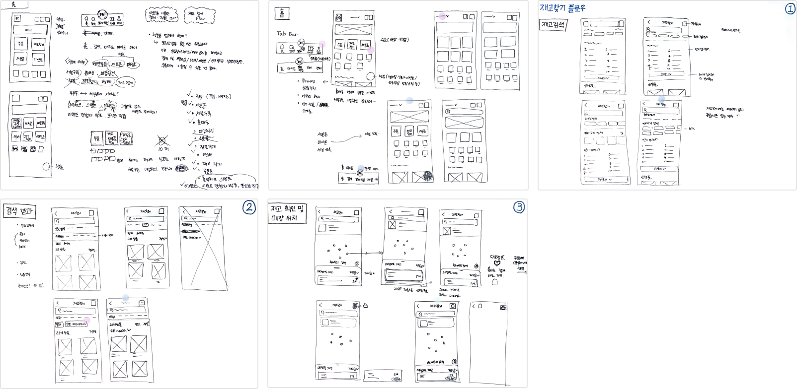

기존 세븐일레븐 편의점 앱의 재고 찾기 서비스 문제를 해결하고 전반적인 디자인 개선을 목표로 리디자인하였습니다.
재고 찾기 과정을 단축하고,사용자 친화적인 접근 방식을 통해 사용자가 보다 쉽고 간편하게 재고를 파악하고 주문까지 이어질 수 있도록 합니다.
1. 일반 검색과 혼동할 수 있는 사용자를 위해 검색바에 '재고 조회' 라벨을 명확히 제공
2. 검색 화면에서 재고를 찾기 어려운 상황을 방지하기 위해 카테고리 및 인기 검색어를 제시
3. 검색 후 정밀한 탐색을 위해 다양한 필터와 정렬 옵션을 제공
1. 매장 리스트를 축소형과 확장형 모두 제공하여 사용자가 한눈에 매장을 파악할 수 있도록 설계
2. 사용자들의 다양한 요구를 충족시키기 위해 거리순과 재고순 정렬 옵션을 제공
3. 재고를 확인한 후 선택한 매장에서 바로 주문할 수 있는 서비스를 제공하여 편의성 증대
기존의 편의점 앱들을 조사하는 과정에서 '세븐일레븐'의 재고 찾기 서비스에 대해 불편함을 느끼는 사용자들이 있다는 것을 발견했습니다. 또한, 재고 찾기 서비스와 관련된 신상품 업데이트의 지연으로 인해 가맹주가 겪는 고충도 확인했습니다. 이러한 문제들을 명확하게 정의하기 위해 시장조사와 사용자들을 대상으로 데스크 리서치, 설문조사를 진행했습니다. 이를 통해 공통된 고충점을 확인하고 해결책을 모색할 수 있었습니다.
경쟁사 앱 3개의 재고 찾기 서비스를 자사 앱과 비교 분석하여 각 서비스의 장점과 단점을 파악했습니다. 이를 바탕으로 재고 찾기 과정을 줄이는 우선적인 목표를 정의하고 쉽고 익숙하고 편리한 서비스를 제공할 수 있도록 플로우별로 필수 기능과 부가 기능을 정리했습니다.
설문조사 결과와 경쟁사 분석을 바탕으로 아이디어 스케치를 진행하여 각 플로우별로 화면 요소와 구조를 정의하고, 다양한 레이아웃을 고려한 후 우선순위에 따라 디자인을 진행하였습니다.
기존 '재고찾기'
개선된 '재고찾기'